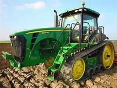

En Colombia se realizan tradicionales concursos de tractores y tractomulas en reserva, principalmente en las regiones de Cundinamarce y Boyacá, aunque se extiende por toda la región andina. En 2023 se implementó por primera vez el Arbitraje digital, con el que se tiene como objetivo garantizar que los tiempos medidos sean exactos, además de contar con conductores expertos.
Los premios suelen incluír donaciones, pollos, gallinas, almuerzos, dinero, entre otros. También hay reconocimientos especiales a las mujeres que participen, al más jóven, al más viejo, al mejor adornado...